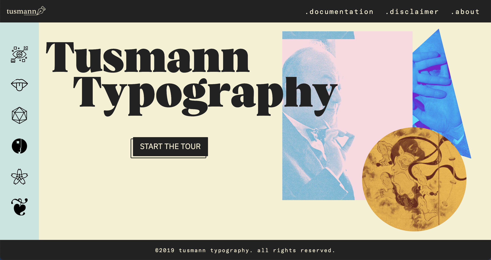
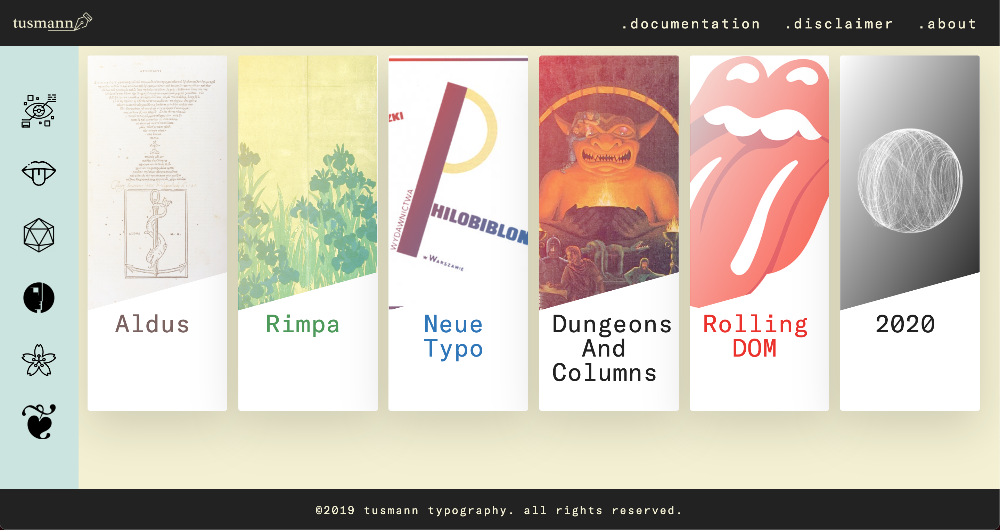

<div id="ajax-page" class="ajax-page-content">
    <div class="ajax-page-wrapper">
        <div class="ajax-page-nav">
            <div class="nav-item ajax-page-prev-next">
                <a class="ajax-page-load" href="portfolio-project-2.html"><i class="lnr lnr-chevron-left"></i></a>
                <a class="ajax-page-load" href="portfolio-project-4.html"><i class="lnr lnr-chevron-right"></i></a>
            </div>
            <div class="nav-item ajax-page-close-button">
                <a id="ajax-page-close-button" href="#"><i class="lnr lnr-cross"></i></a>
            </div>
        </div>

        <div class="ajax-page-title">
            <h1>Tusmann Project</h1>
        </div>

        <div class="row">
            <div class="col-sm-8 col-md-8 portfolio-block">
                <div class="owl-carousel portfolio-page-carousel">
                    <div class="item">
                        
                    </div>
                    <div class="item">
                        
                    </div>
                </div>


                <script type="text/javascript">
                    jQuery(document).ready(function($){
                        $('.portfolio-page-carousel').imagesLoaded(function(){
                            $('.portfolio-page-carousel').owlCarousel({
                                smartSpeed:1200,
                                items: 1,
                                loop: true,
                                dots: true,
                                nav: true,
                                navText: false,
                                margin: 10,
                                autoHeight:true
                            });
                        });
                    });
                </script>
            </div>

            <div class="col-sm-4 col-md-4 portfolio-block">
                <!-- Project Description -->
                <div class="project-description">
                    <div class="block-title">
                        <h3>Description</h3>
                    </div>
                    <ul class="project-general-info">
                        <li><p><i class="fa fa-user"></i>Andrea Poltronieri</p></li>
                        <li><p><i class="fa fa-user"></i>Carlo Teo Pedretti</p></li>
                        <li><p><i class="fa fa-user"></i>Francesca Mangialardo</p></li>
                        <li><p><i class="fa fa-globe"></i> <a href="https://tusmann.github.io/tusmann/" target="_blank">Project page</a></p></li>
                        <li><p><i class="fa fa-calendar"></i>2019</p></li>
                    </ul>

                    <!--<p class="text-justify">Aliquam euismod aliquam massa, quis eleifend dui sodales vitae. Interdum et malesuada fames ac ante ipsum primis in faucibus.</p>
                     /Project Description -->

                    <!-- Technology -->
                    <div class="tags-block">
                        <div class="block-title">
                            <h3>Technology</h3>
                        </div>
                        <ul class="tags">
                            <li><a>HTML</a></li>
                            <li><a>CSS</a></li>
                            <li><a>JavaScript</a></li>
                            <li><a>SCSS</a></li>
                        </ul>
                    </div>
                    <!-- /Technology -->

                    <!-- Share Buttons -->
                    <div class="btn-group share-buttons">
                        <div class="block-title">
                            <h3>Share</h3>
                        </div>
                        <div class="fb-share-button" data-href="https://tusmann.github.io/tusmann/" data-layout="button" data-size="small"><a target="_blank" href="https://www.facebook.com/sharer/sharer.php?u=https%3A%2F%2Fandreapoltronieri.org%2FHaMSE_project%2F&amp;src=sdkpreparse" class="fab fa-facebook-f"></a></div>
                        <!--<a class="twitter-share-button" href="https://twitter.com/intent/tweet"><i class="fab fa-twitter"></i> </a>
                        <a href="#" target="_blank" class="btn"><i class="fab fa-dribbble"></i> </a>-->
                        <a href="https://twitter.com/share?ref_src=twsrc%5Etfw" class="twitter-share-button" data-show-count="false"></a><script async src="https://platform.twitter.com/widgets.js" charset="utf-8"></script>
                    </div>
                    <!-- /Share Buttons -->
                </div>
                <!-- Project Description -->
            </div>
            <div class="col-sm-12 col-md-8 col-lg-8">
                <p>Project developed for the final exam of the course in Information Modelling and Web Technologies. The project aims to use web design technologies to create a web application that can display web pages in different typographic styles from different historical periods. For this project's development, the standard web development technologies were used, in particular HTML, SCSS and JavaScript.</p>
            </div>
        </div>
    </div>
</div>
